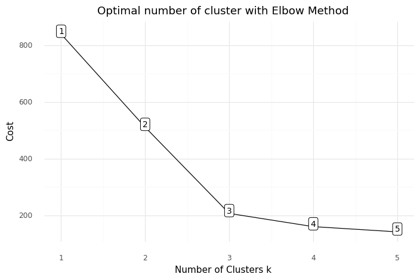
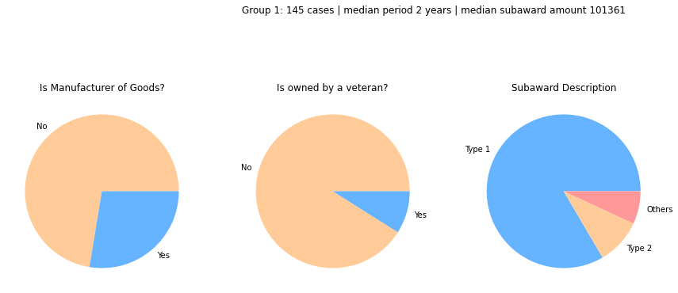
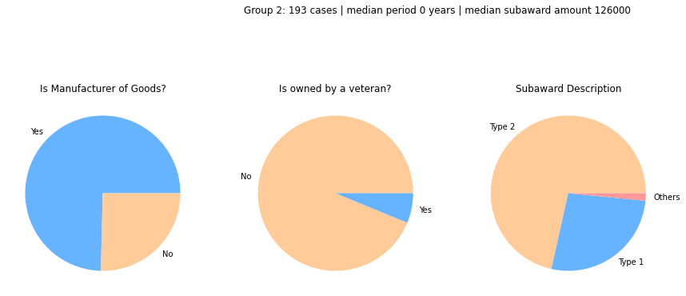
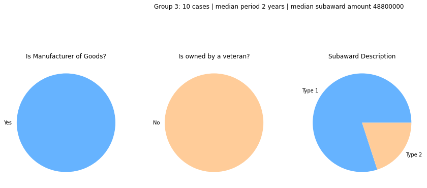

Department of Defense, whose spending accounts for 14.9% of the total spending of the U.S. Federal Government in FY 2022, awarded contractors, such as Raytheon Technologies (former as Raytheon Company), for manufacturing weapons and military and commercial electronics. Those contractors and their programs could easily be the targets of foreign hackers. To prevent such cyber threats, investigating the profiles of those programs, such as their awarded amounts or business types of contractors can be useful for further identifying programs may be potentially targeted by the hackers and providing further protection.
Continue to ReadIn May 2021, hackers attacked Colonial Pipeline, the largest pipeline
system for refined oil products in the U.S. carrying
3 million barrels of fuel per day between Texas and New York.
The ransomware cyberattack caused five-days pipeline shutdown,
which resulted in a temporary fuel shortage along the East Coast (Wiki).
The consequences of cyberattacks can be devastating, such as electrical blackouts, failure of military equipment,
and even breaches of national security secrets. Considering other similar incidents of Colonial Pipeline such as SolarWinds and Microsoft Exchange,
President Biden signed an Executive Order to improve the nation’s cybersecurity and protect federal government networks.
To bolster cyber security, even with the higher and higher proposed budget of the U.S. government for cyber security, the Biden administration seeks
another boost on the budget of fiscal year (FY) 2023 on
cyber related task -- an increase of $800 million, nearly 8%,
over the FY 2022, and $1.4 billion more than the plan for the FY
before that (Source: C4ISRNET).
Meanwhile, Department of Defense (DoD), whose spending accounts for 14.9% of the total spending of the U.S.
Federal Government in FY 2022, awarded contractor, such as Raytheon Technologies (former as Raytheon Company),
for researching and developing weapons and military and commercial electronics. Programs of contractors like Raytheon Technologies and their sub-contractors could easily be the targets
of foreign hackers. To prevent such cyber threats, investigating the profiles of those programs and corresponding contractors, such as their awarded amounts or
business types, can be useful for further identifying programs may be potentially targeted by the hackers and providing further protection.
A dataset containing 348 award records of 78 sub-contractors awarded by the Raytheon Company
were analyzed in this project. The data can be directly downloaded from
USASpending.gov. While the awards to Raytheon Company by DoD
is mainly for Research and Development, the sub-award types cover from developing or improving technologies for various parts for millitary use, such as
accelerometers, cables, lithium batteries, to non-product service, such as Tech/Eng services. The total awarded amount to programs of
sub-contractors is $654.3 million, or 256.5% of the Raytheon Company's total obligated amount, which is $255.1 million.
Figure 1. Total award amount by State. Select a state to see details.
Note: log1p, natural logarithm of one plus the award amount
The subawardees (sub-contractors) of the Raytheon Company cover 25 states through out the U.S. The top 3 states with most total award amount are Maryland, Arizona, and California (Figure 1). The top 3 states with most awards are Arizona (73), California (68), and Maryland (26). The top 3 states with highest average amount per award are Maryland ($21 M), West Virginia ($2.2 M), and Connecticut ($1.4 M). Overall, subawardees from the state of Maryland have been awarded $553.3 M, or 84.6% of the total award amount from the Raytheon Company.
Each award (project) is awared to certain business type subawardees and has award description. Those information describes the characteristics of the award and subawardee. The business type describes what is the award for. For example, whether the subawardee a For-Profit Organization or not, or whether the award is for a manufacturer of goods instead of providing service. In the Raytheon Company dataset, only three awards were awarded to Non-profit organization with total amount of $213 k. All other awards were awarded to For-Profit Organizations. Most awards went to companies with business of "Manufacturer of Goods". There are 29 unique subawardee business types through out 348 award records.
Another interesting feature of the data is the award description, which implies the project nature. It describes what product or service they are manufacturing or providing. For example, the award could be given to explosive cut device development, missile antenna, or only for other Non-recurring engineering (NRE) cost without mentioning the particular product. There are 73 unique award descriptions through out 348 award records.
Subawardee's Business Type can be one feature that attracts hackers. Business of "Manufacturer of Goods" may attract hackers to dig more of their programs. Moreover, whether the company is owned by a veteran can be potentially sensitive to hackers. Thus, identifying whether a subawardee company is a manufacturer of goods and whether it is owned by a veteran is critical.
Award description is the most important feature to identify the nature if awarded project. As the business types in the data are text records, hierarchical clustering using TF-IDF and cosine similarity is used to classfy the business types.
Project period may imply the importance of the project. Subtracting subaward action fiscal year from FSRS report year represents the project period.
To better understanding the awarded project, business type, award description, subaward amount, project period were considered to classify the awarded programs. K-prototype as Clustering Algorithm for mixed data type was applied to classify the award records (awarded programs).
Award descriptions, 78 unique types in total, were divided into three categories using hierarchical clustering method. Type 1 contains 175 award records, and type 2 contains 160 award records, while 13 award records fell into "Other" category. Type 1 mainly contains awards of NRE cost (Figure 2), while Type 2 contains NRE cost and other manufacturing product such as detonator and fuselage. In other words, Type 2 award is mainly for product development, while Type 1 award is for NRE cost.
Type 1
Type 2
Figure 2. Award description by groups
K-prototype requires a hyperparameter of the number of the groups. The Elbow method was used to determine the number of the groups, which indicates there would be 3 groups (Figure 3).
Figure 3. Number of cluster determination
After dividing all the award records (awarded projects) into three groups, the profiles of each group can be obtained (Figure 4). Group 1 contains 145 awards with most of them not from subawardees who manufacture products and are not owned by a veteran. Most of the awards in Group 1 are with Type 1 award description (NRE cost). The median award amount is $101361, which is relatively small among all the records. Group 2 contains 193 awards with most of them from subawardees who manufacture products but are not owned by a veteran. The dominant award description is Type 2 (product development). The project period of Group 2 is shortest, which means the award has not been awarded too long. Group 3 contains 10 awards with median award amount of $48 M. The awards in Group 3 were from subawardees who manufacture products and are owned by a veteran.
  Figure 4. Awarded project profiles by groups
Investigating the award profiles could be useful for NSA providing further assistant or protection to those projects might be targeted by hackers. For example, if NSA has the data of some historical attacks and their target programs, we can use the classification obtained by this project to see which category the historical target programs fell into. In this way, the awarded projects and corresponding subawardees in the same category as the historical target programs should be prioritized for higher cyber security level.